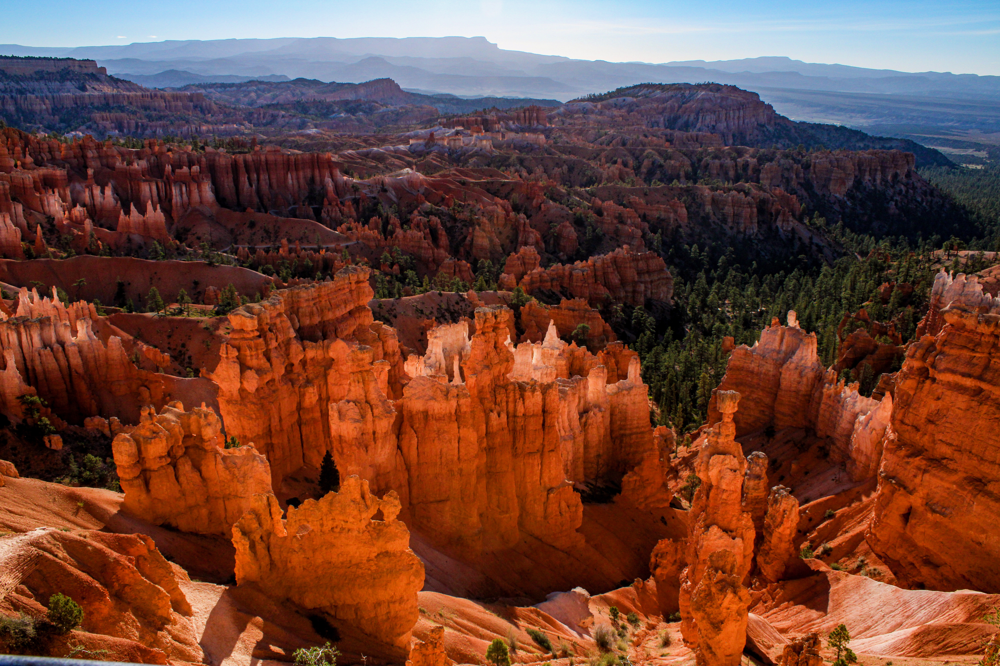
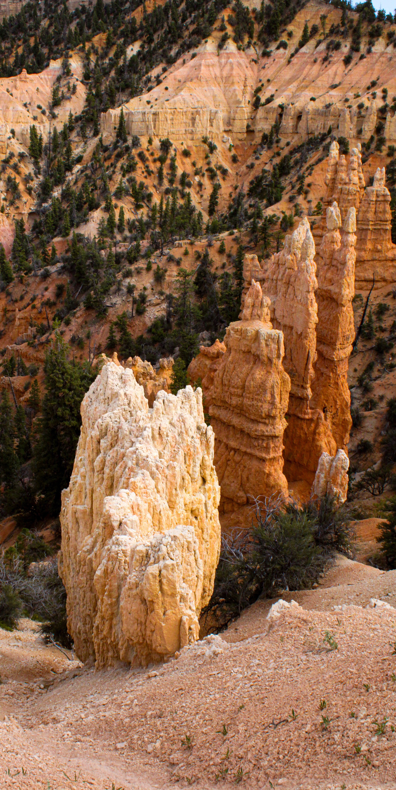
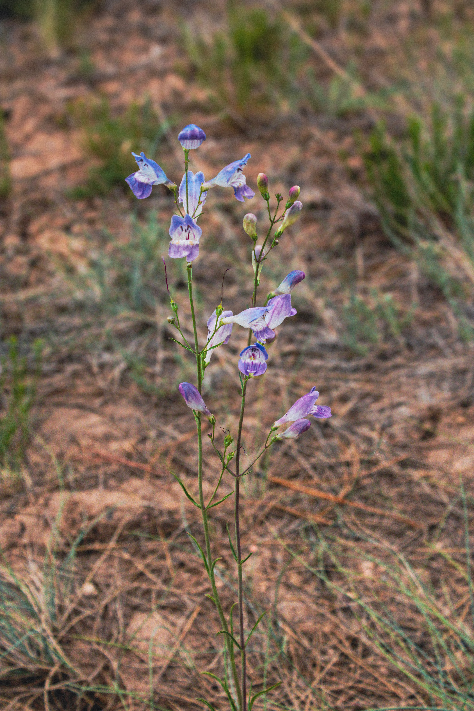

Hi, I'm Emily!
This is my collection of
digital creations, stories,
& projects.
I like to express what I see in the world through creativity, conversations, and curiosity. This is my space for photography, filmmaking, and creative experimentation. Glad you're here!
Explore my work ↓Selected projects.

Bryce Canyon
Landscape Photography · Utah

After the Last Light
Photography · Twilight
Salt Lake City
Videography · Filmed & Edited
Egg Sandwich & Matcha
Food Film · Filmed & Edited
Inti Coffee
Short-form Film · Video Editing
A collaborative visual piece highlighting the atmosphere and identity of a local coffee experience.Your Video Title
Videography · Filmed & Edited
Outside the Frame.
A collection of photographs captured during an exploratory trip to Bryce Canyon.




Always exploring.
Never finished.
An evolving collection of ideas, visual studies, and creative experiments.
A little about me.
I'm Emily, a digital creator interested in exploring new perspectives, sharing dialogue with others, and creating ideas through photography and film.
I've explored content creation across a variety of topics, including food, language, nature, and cinematography. I'm excited to discover even more.
Though my work has been exploratory, I hope to increasingly focus on conversations with local cultures and sharing information and opportunities with students navigating secondary education and college.